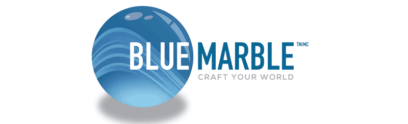
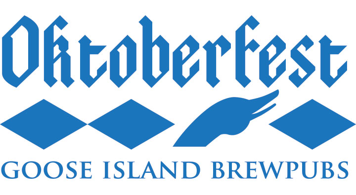
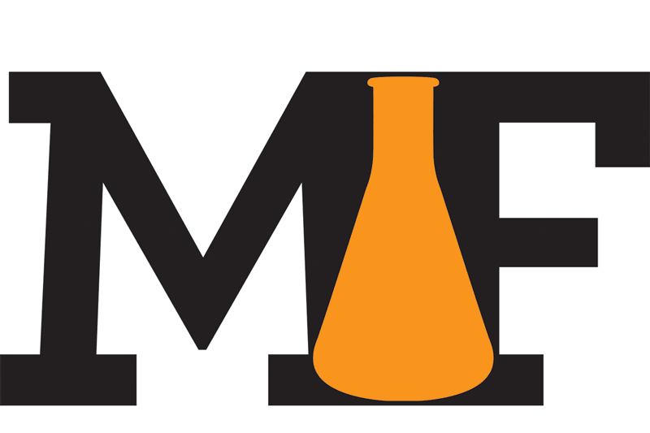

311 South Wacker

During my time at Torque Digital, I had the pleasure of rebranding one of the defining buildings of the Chicago Skyline. We pitched several possible logos and the client ultimately chose my direction. I wanted to take the clean bold lines of the building and its iconic crown and blend them into the number itself.
Loew Cornell
At Torque Digital, I had the opportunity to rebrand the art and craft company Loew Cornell, as well as create an identity for two of their new product brands; Simply Art, and Blue Marble.
Goose Island Brewpubs
Goose Island Brewpubs was looking to create a varient on their chicago flag logo to be used on their mugs for Oktoberfest. I chose to replicate this with a bold German style font and diamonds reminicent of Oktoberfest patterns.
Homebrewing
As an active homebrewer, I've made several friends in the online world of homebrewing and was happy to assist creating identies for both a reddit forum and multiple high profile homebrewing blogs.

Additionally, I also enjoy bottling and branding my own homebrew.